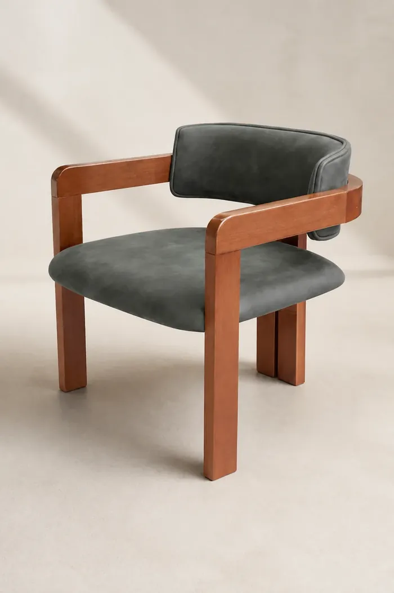
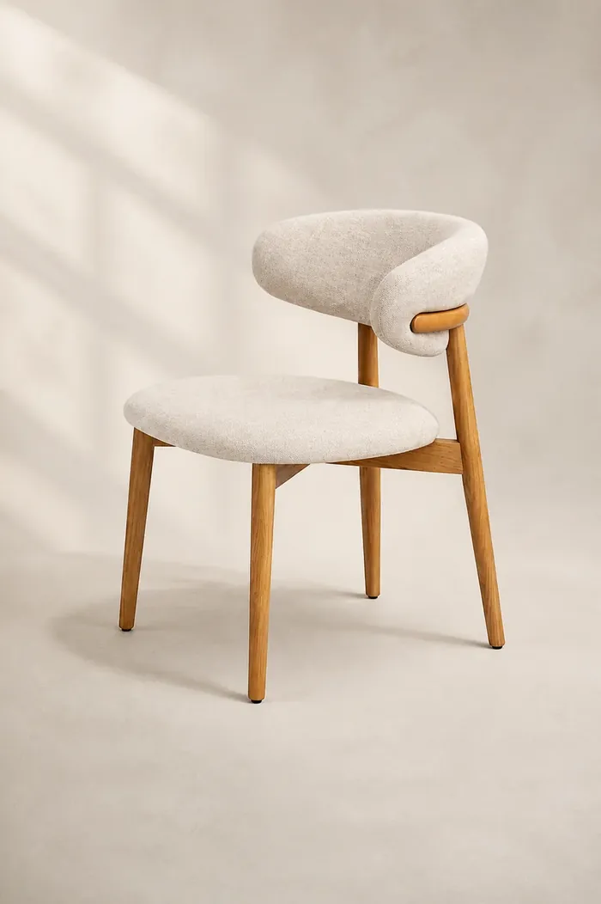
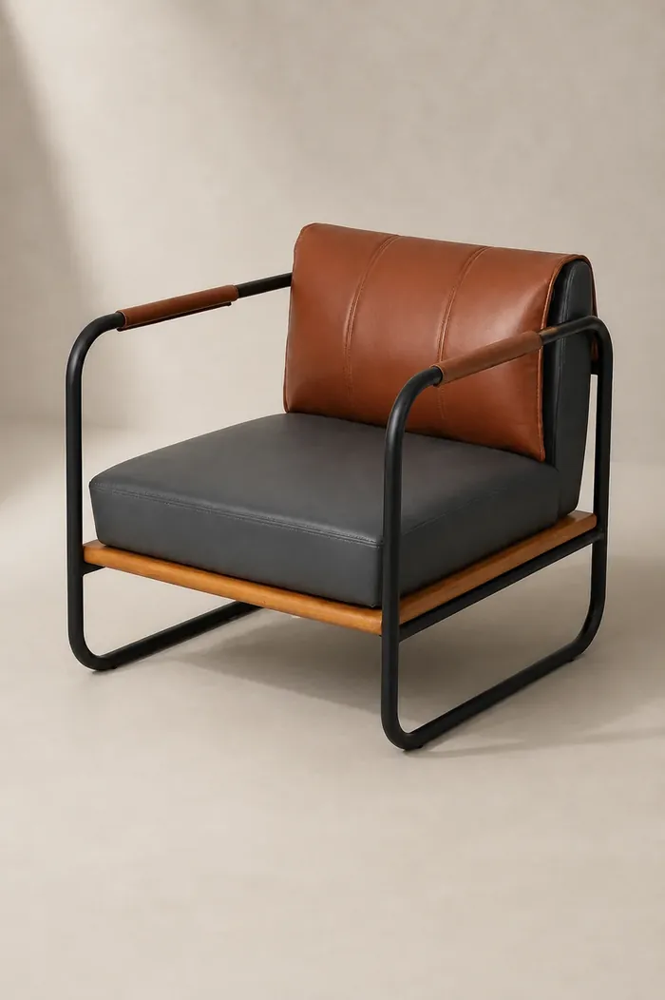
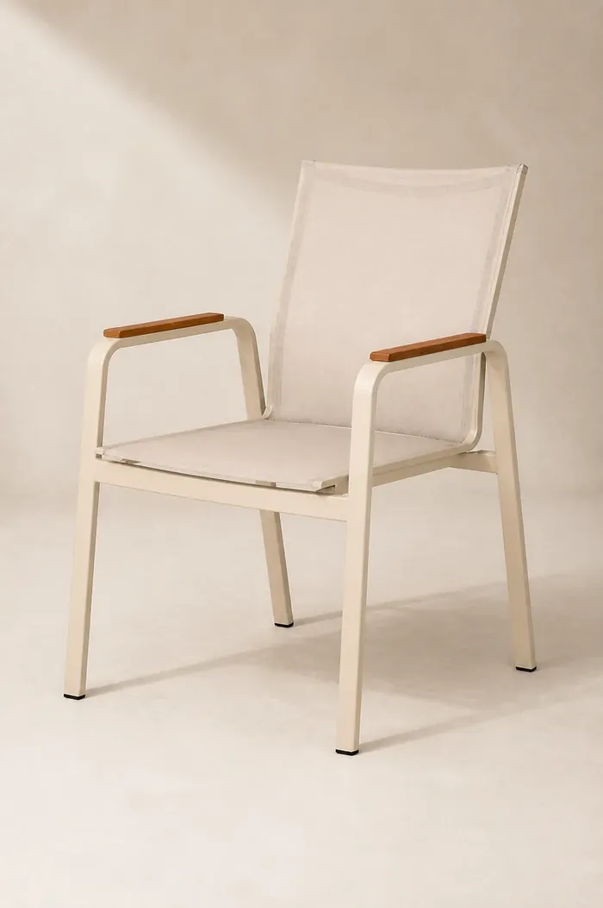
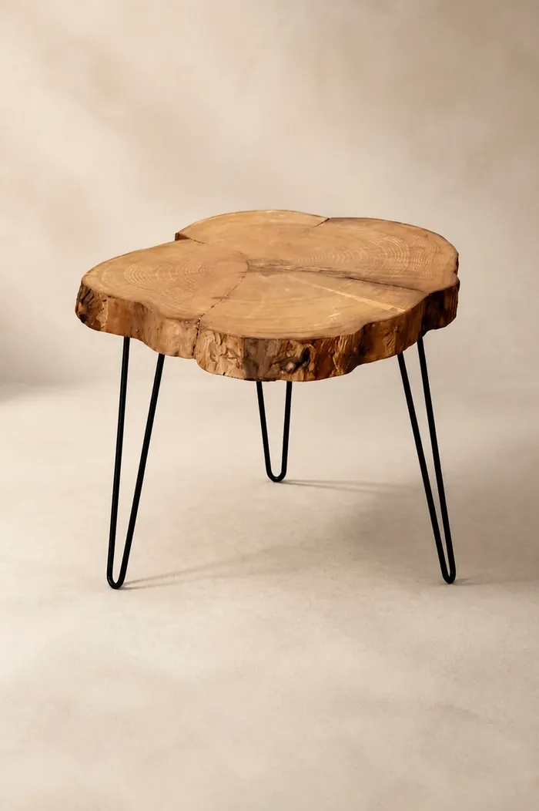
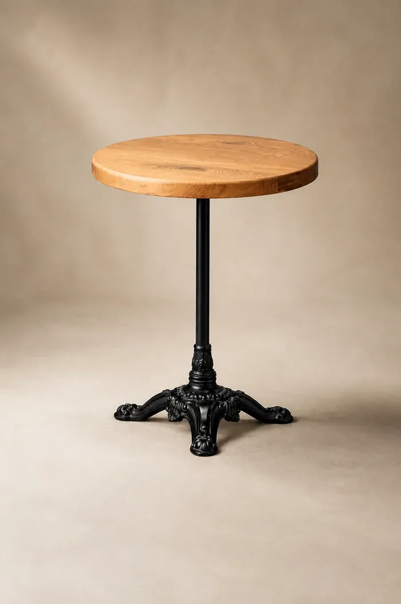
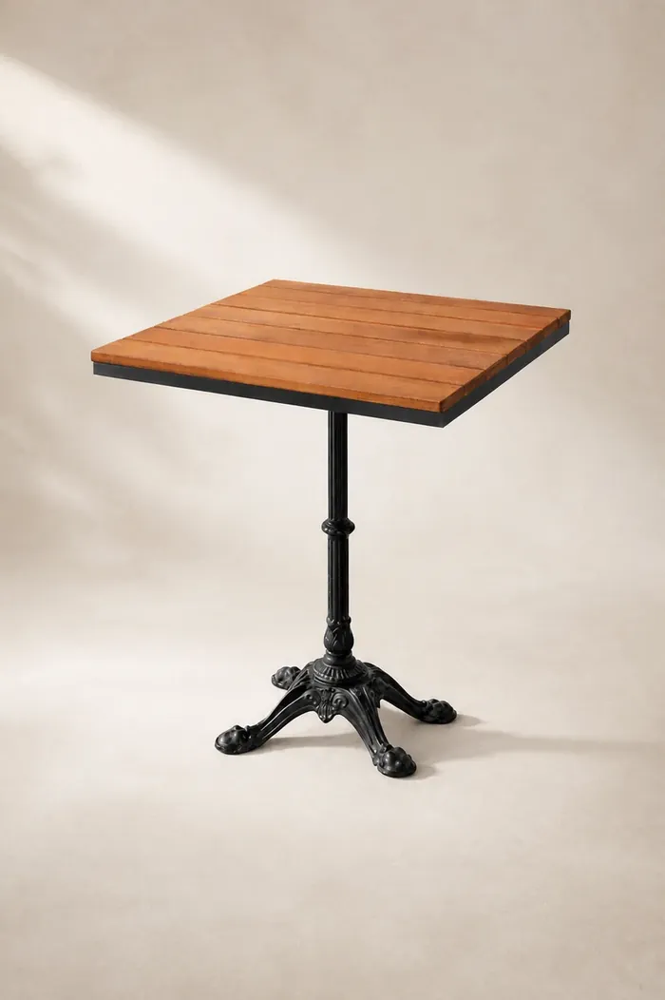
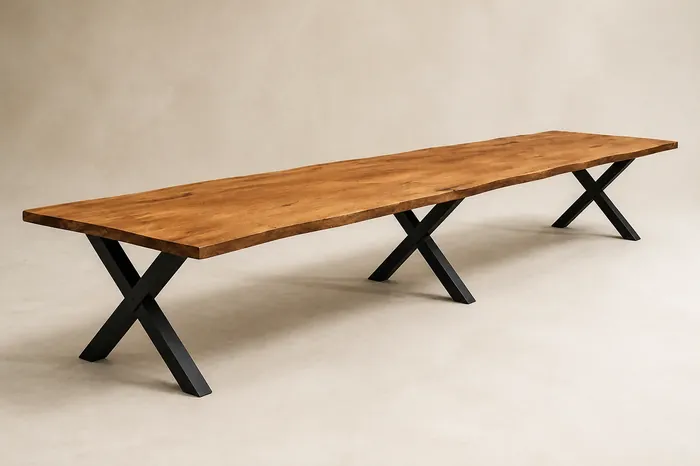

Projeye özel üretimÖlçü ve malzeme uyarlaması
info@2dsignmimarlik.com
15 parça
Berjer · kapitone deri + ceviz

Kollu koltuk · deri + masif ahşap
Lounge · kapitone kumaş + meşe
Kollu sandalye · kumaş + meşe

Sandalye · dokulu kumaş + meşe
Sandalye · deri + ceviz + pirinç

Berjer · deri + metal + ahşap
Lounge · masif ahşap + kumaş
Kollu koltuk · örgü + metal

Dış mekân · boyalı metal + sling

Yan sehpa · doğal kenar ahşap

Bistro masa · masif ahşap + döküm

Bistro masa · ahşap + döküm metal
Yemek masası · doğal kenar + çelik

Ortak masa · doğal kenar + çelik